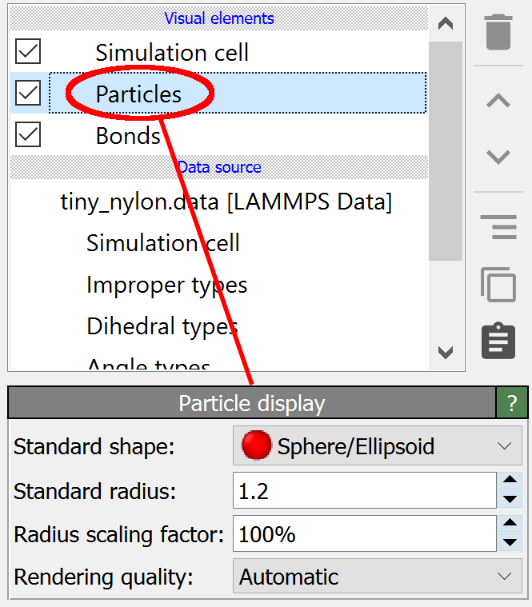

Particles
{kind=link}
This visual element is responsible for rendering particles in the viewports. Typically, particles are visualized as simple spheres, but you can switch to other, more complex geometric shapes if desired.
The Particles visual element provides a set of parameters controlling the visual representation of the particles, which will be described in the section below. Additionally, the visualization is affected by certain properties of the particles themselves, listed in the following table. By setting the values of these particle properties, for example using the Compute property modifier, you can fully control the visualization on a per-particle basis.
Particle property |
Data type |
Description |
|---|---|---|
|
Real (R,G,B) |
Controls the display color of individual particles. Red, green and blue components must be in the range [0,1]. |
|
Real |
Controls the display size on a per-particle basis. |
|
Integer |
Used to determine size and color if the |
|
Real |
Controls the transparency of individual particles. Must be in the range [0,1]. |
|
Real (X,Y,Z) |
Controls the size of particles with a non-symmetric shape. The exact interpretation of this property depends on the selected Standard shape, see below. |
|
Real (X,Y,Z,W) |
Specifies the orientation of particles with non-symmetric shapes. The rotation of each particle is specified in terms of a quaternion. See this section for further information. |
Parameters
- Standard shape
Selects the display shape of particles for which the shape is not already specified on a per-type basis. The current program version offers the choice between the following shapes:
- Sphere/Ellipsoid
Particles are visualized as 3d spheres. Unless the
Aspherical Shapeparticle property has been defined; then they are rendered as ellipsoidal particles. In this case, the three components of theAspherical Shapevector property control the half lengths of the principal axes of each ellipsoid and the scalarRadiusproperty is ignored.- Circle
Particles are visualized as flat-shaded circles facing the viewer. Note that some rendering engines do not support this mode.
- Cube/Box
Particles are visualized as cubes if the
Aspherical Shapeparticle property is not present. TheRadiusproperty controls the edge half-length of the cubes in this case. If theAspherical Shapeparticle property is present, particles are rendered as non-cubic boxes with the given half-lengths along the three edges.- Square
Particles are visualized as flat-shaded squares facing the viewer. Note that some rendering engines do not support this mode.
- Cylinder
Particles are visualized as cylinders. The X-component of the
Aspherical Shapevector property controls the cylinder radius of particles in this mode, and the Z-component controls the length of the cylindrical particles. By default, cylinders are aligned along the z-axis. If present, theOrientationparticle property rotates the cylinders.- Spherocylinder
Particles are visualized as cylinders with round caps at each end (capsules). The behavior is the same as for mode Cylinder.
- Standard radius
Specifies the fallback size to be used for particles for which the display size is not already specified on a per-type or per-particle basis. In other words, this value is only used for particles for which none of the following applies:
The
Radiusparticle property has a non-zero value.The particle’s type, as specified by the
Particle Typeproperty, has a non-zero radius.
- Radius scaling factor
This global scaling factor is applied to all particles in the system at rendering time. It is applied in addition to any other factors controlling the size of particles (per-type radius, per-particle radius, standard radius). By setting it to a value below 100%, the scaling factor provides a convenient way of generating a balls-and-stick visualization of a molecular system, with reduced atomic spheres that are connected by cylindrical bonds.
- Rendering quality
This parameter controls the method used for rendering the particles in the interactive viewports. The following modes are available and affect only the rendering of spherical particles:
- Low
Particles are rendered as texture-mapped imposters facing the viewer. Particles do not have depth in this mode, and intersections between spherical particles may not be displayed correctly. This mode is the fastest.
- Medium
Particles are rendered as texture-mapped imposters facing the viewer. An OpenGL fragment shader is used to compute depth information for each rendered pixel to produce reasonable looking sphere-sphere intersections for overlapping particles.
- High
Particles are rendered as true spheres using an OpenGL fragment shader, which computes the ray-sphere intersection for every rendered pixel.
- Automatic
OVITO automatically switches between the three quality levels above depending on the number of particles to render in the interactive viewports. For less than 4,000 particles, the high-quality method is used. For more than 400,000 particles, the lowest quality mode is used. Irrespective of the particle number, high-quality mode is always used to produce a final output image.
See also
ovito.vis.ParticlesVis (Python API)